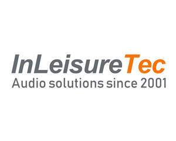

Trade Mark Journal No.2026/001 2 January 2026
UK00004311353 16 December 2025 (9,12,37,39,41)
Mark 1
Mark 2

- Class 9
- Audio speakers for vehicles; Audio equipment; Audio amplifiers; Speakers [audio equipment]; Audio speakers for home; Audio speakers; Audio speakers for automobiles; Audio cable; Audio and video receivers; Audio cables; Audio speaker enclosures; Audio receivers; Audio apparatus; Audio players; Equalisers [audio apparatus]; Equalisers being audio apparatus; Audio frequency amplifiers; Audio equalizers; Signal processors for audio speakers; Audio interfaces; Audio loudspeaker systems; Rearview cameras for vehicles; Cameras for vehicles; Helmet camera mounts; Camera mounts; Camera lenses; Radios (Vehicle -); Vehicle radios; Dashboard cameras; Vehicle stereos; Vehicle tracking apparatus; Cameras; Vehicle fuses; Marine radios.
- Class 12
- Tow bars; Vehicle tow bars; Tow bars for trailers; Tow bars for vehicles; Tow hooks; Hooks [tow hitches] for vehicles; Tow hitches; Tow trucks; Roof bars for vehicles; Tow balls; Vehicle roll bars; Towing hook mountings; Torsion bars for vehicles; Bars (Torsion -) for vehicles; Bicycle handle bars; Handle bars for bicycles; Torsion bars for motor cars; Handle bars for motorcycles; Tow tractors; Towing hooks for vehicles; Torsion bars for land vehicle suspensions; Handle bars [parts of motorcycles]; Cycle handle bars; Towing hitches of metal for vehicles; Torsion/sway bars [land vehicle suspension parts]; Sissy bars for bicycles; Towing trucks; Handle bars for bicycles, cycles; Cars for cable transport installations; Removable ball hooks for vehicles; Sissy bars for motorcycles; Fitted vehicle roll bar covers; Handle bar dampers [parts of motorcycles]; Handle bar ends [bicycle parts]; Handle bar grips [parts of motorcycles]; Towing pins of metal for vehicles; Lift trucks; Vehicle trailers.
- Class 37
- Repair of vehicle tow bars; Repair of tailboard lifts; Repair of cameras; Installation of vehicle security devices.
- Class 39
- Marine towing; Marine transport; Marine towage; Boat transportation services.
- Class 41
- Leisure services.
In Car Technologies Ltd